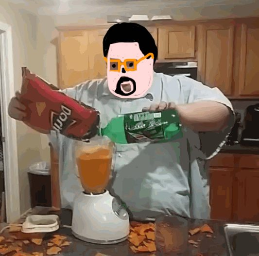
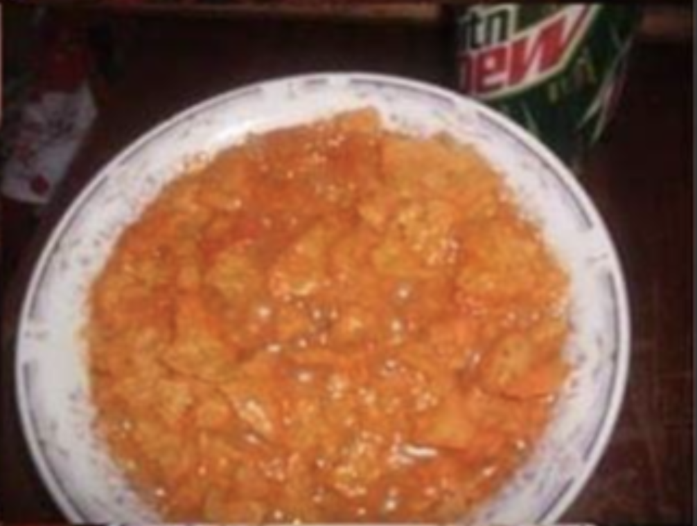

An infamous recipe for the gamer's gamer, who games...er!
So good, you won't want to share. So good, you can't help but want to make everyone taste.
Game start:
What you'll need
- Doritos (this human guy recommends the Spicy Nacho variety)
- Mountain Dew (pick the greenest one you can find)
- A bowl (preferably unwashed for added flavor)
What you'll need to do: A step by step Odyssey
*You don't end up overmixing like this wannabe gamer:*

- Finish your game or reach the next checkpoint. A real gamer's game knows no pause.
- Stand up. This may be difficult. Your legs might be sore after such an intense sitting session
- Go to the kitchen. A pit stop to the washroom is acceptable.
- Get your bowl out of the gutter of unwashed dishes
- Open the pantry and take out the Doritos. A true gamer should have enough supplies to last a Zombie Apocalypse.
- Open the fridge and grab some Dew.
- Dump some chips in the bowl
- Pour some Dew to make a stew
- Enjoy with a spoon or if you are unstoppable , enjoy with your soon to be finger licked fingers
Your results may vary, but here's an example of spicy dewy deliciousness TM
